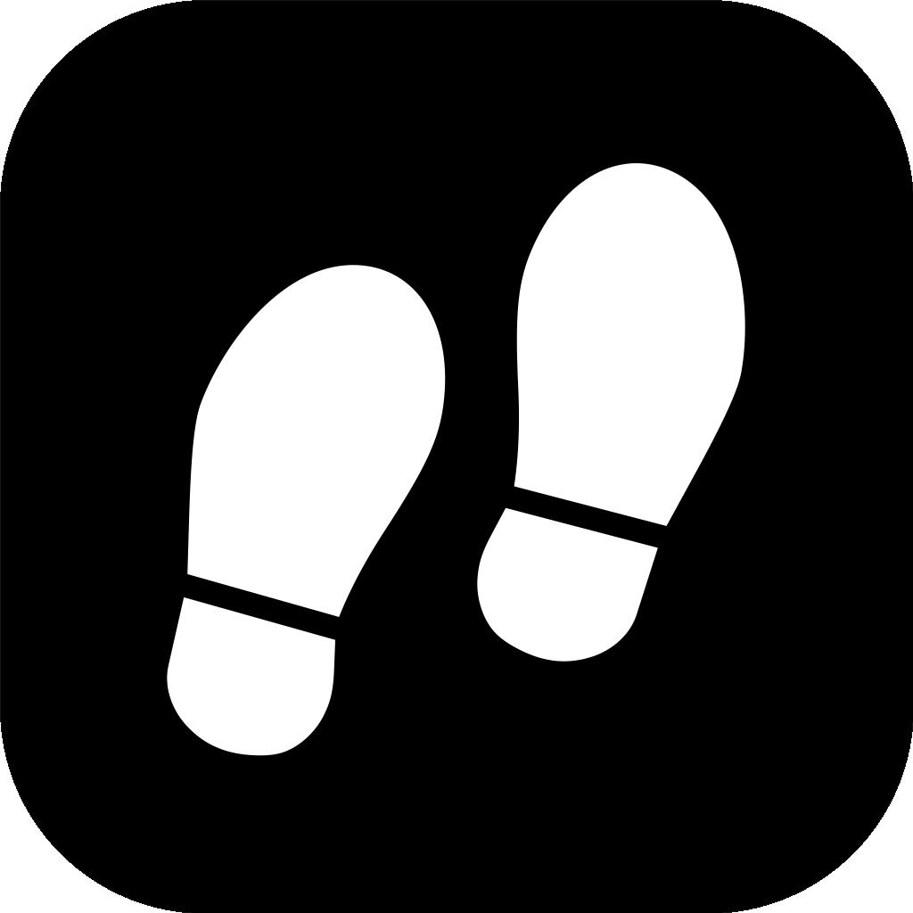

Local-first
Your location history lives in an on-device SwiftData store. No app account, analytics, or cloud sync.
Apple Maps may use network services.
Your day, without the guesswork.
A location diary for iOS. See where you moved, where you stayed, and what remains unknown. Your history stays on your device.
Build it for your iPhoneYour location history lives in an on-device SwiftData store. No app account, analytics, or cloud sync.
Apple Maps may use network services.Path shows observed movement. Time weights each stay by duration—not by the number of GPS fixes.
One diary. Path + Time.Navigation-grade recording preserves raw fixes. Background battery impact still needs field measurement.
No unverified sub-2% promise.Moving + stationary + unknown = elapsed time. Even on a 23- or 25-hour daylight-saving day.
Gaps stay gaps.Switch the view to see what distance alone misses.
In Time mode, radius scales with √duration. A longer stay gets more area, not more invented movement.
How it works, what it stores, and where its limits are.
Read the README on GitHub. Enable JavaScript for the document reader.
Open the project in Xcode, choose your signing team, and run it on your iPhone. There is no App Store download yet.
Get the source on GitHub ↗simply-sunny/footsteps and open Footsteps.xcodeproj.Free provisioning expires after 7 days. Unlock once after a reboot before recording can resume. Health access is optional; grant it only when reading steps.